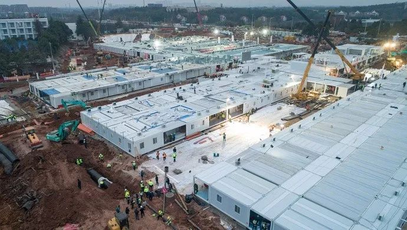
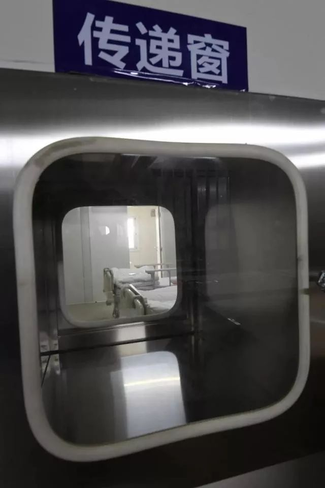
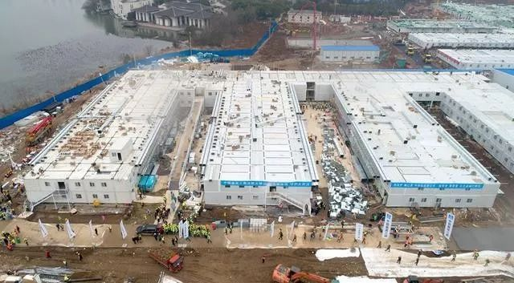
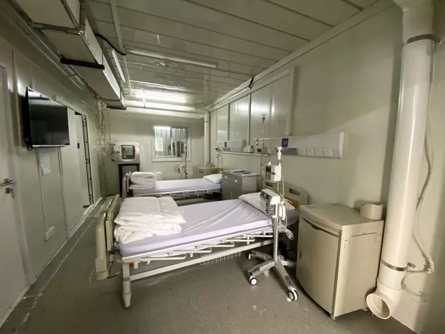
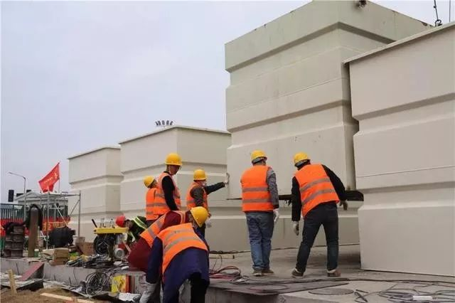

特写|武汉协和“超级传播者”主管医生赵雷：医患都要有信心战胜新冠肺炎
原文链接 备份链接 【财新网】（记者 高昱） 感染科医生的除夕 先戴口罩，然后是帽子，接着穿白色的清洁工作服，也就是医生护士们每天穿的白大褂。领子要竖起来，尽可能遮住脖子。 最重要的是第四步，穿连体防护服。非织造布的防护服经过了复膜处理， …

2020年2月4日上午9点26分，备受瞩目的武汉火神山医院收治了它的第一批患者，一共50位。据媒体报道，他们分别来自汉口医院、武昌医院等三所医院，转运任务由武汉市急救中心负责。从武汉城区，到远郊的蔡甸知音湖边，这50名病人将在火神山医院的感染七科度过接下来的一段时间。
火神山医院从1月25日动工，到2月4日第一个病区启用，一共是11天。期待之后一个个病区陆续建好、收治，缓解武汉患者看病之难。
以下是《人物》记者在火神山医院注意到的七个细节。
文｜梅枚
编辑｜金石
1
首批转院至火神山的50名患者，基本都是轻症患者，从汉口医院等医院转运而来。医生介绍了这样选择的原因——这次转院是军地之间的交接，第一次转运算是试水，双方相互磨合、熟悉流程，以防转运过程中出现一些不可预估的问题。所以先运轻症患者，先轻后重。
在央视昨晚的直播中，负责转运的丁医生介绍了转运病人的流程。
每辆救护车接五位病人，医生会拿到一个五人名单。这些病人身上也会有一个二维码，记录了他们的基本信息、就诊记录，也有他们的编号。之后到了火神山医院，也会按照这个编号收治和入住。这样一来，二维码会追溯病人看病的整个过程。
转运病人的救护车，也是特有的救护车。驾驶舱与后面车厢之间存在负压。病人上车后，驾驶员可以摁下按钮，开启负压模式，两边的空气不会产生交换。整个运输过程中，两舱之间的玻璃也是严禁打开的。

转运病人 图源人民日报
2
50位患者将在感染七科接受治疗。一部分患者在一楼的感染七科一病区，剩下患者则在二楼的感染七科二病区。住院楼修有斜坡，有几米高，从地面直接通到楼上，患者从救护车上下来，可以直接被推到二楼。
根据病房的标识，感染七科一病区是48个床位，二病区是56个床位，加起来是104个床位。一病区有病房被改造成了检验室，所以预估下来，感染七科可以容纳的病人大概在100位左右。
火神山医院的病房，都按照标准的传染病医院设计——病房前后门都有走廊，前门外的走廊是医护人员专用通道，病人不能进出。后门外的走廊，病人可以进出，属于污染区。这样设计是防止交叉感染。
打开病房的第一扇大门，首先看到的是一个缓冲区，有几平米的空间。再打开一扇小门，才是真正的病房。房间里有空调、电视、紫外线消毒灯、马桶与淋浴。床头有呼叫器，有吸引器，用来给病人吸痰和做雾化。2月3日，各种治疗所需的器械也已经摆放在病房。
和小汤山医院一样，火神山的每个病房也有一个传递窗，内外都有开关。医护就通过它来向患者传递药品和食物。

传递窗 图源网络
3
同样是在央视的直播中，这位负责转运的丁医生介绍了火神山医院的完工情况。「火神山的主体结构已经基本完工。电水已经通了，现在是一个病区一个病区地去施工。已经完工一个病区，可以入住，其他病区的主体已经完工，但内部工程及设备等等，还在完善。」
这与《人物》在现场看到的情况基本相同。目前完工的这个病区，就是处在火神山医院最里面的感染七科，这是一座白色的两层建筑。
在感染七科完工后，另一座接近完工的，是与它相邻的一栋同样规格的建筑。施工工人应该是最了解具体施工进度的人之一，负责安装风机的工人和负责机电的工人说，这栋楼的完工大概还需要三天左右的时间。
同样在等待最后完善的，还有位于医院中部的ICU病房和与它相邻的医技楼。

火神山医院的全貌 图源网络
4
2月3日下午，火神山感染七科的负压病房完成了最后的验收。
负压病房通常是传染病医院特有的病房，病房内气压低于病房外气压，这样一来，外面的新鲜空气可以流进病房，而病房内被患者污染过的空气，则是通过专门的通道及时排放到固定的地方，从而降低医务人员被感染的风险。
火神山医院负压病房的设置是，天花板上有一个进风口，靠近地面处有一个大管子，是出风口。工作人员介绍，空气是从室外取出来的，病房外装有风机，把空气抽进来，进入病房后，再由出风口排到室外，完成一个循环。
排入大气之前，来自病房的空气会经过三级过滤，分别是初效、中效和高效。到高效阶段时，网格很密很密，气溶胶等大部分颗粒都过不去，都会被过滤掉。
负压病房的要点是，让病房内排风的速度比送风的速度大，排多送少，而被病房包围的中间那条医护人员通道，则基本只送风。《人物》在现场看到，医护人员走廊里有几个巨大的进风口，比病房里的进风口要大得多。这样一来，医护人员走廊的气压就会高于病房气压，两者的空气不会交换，以达到保护医护人员的目的。
在现场我们看到，湖北省疾控中心的工作人员扯掉一根自己的头发，分别放在出风口和进风口，测试风的大小和方向。据他们介绍，目前开放的感染七科是普通病房，压力差大概为5帕。目前还未开放的重症病房，因为收治的是更重症的病人，对负压的要求会更高些，要达到10帕。
负压病房，对房间密封性的要求很高。在验收前，大量工作人员都在病房里做密封工作。大的缝隙用泡沫胶，小的缝隙用密封胶。要来回检查好几遍，确认全部封死。

负压病房
5
2月3日上午，在检验七科一楼的一个病房，检验科的工作人员正在做最后的设备调试。
火神山医院的检验科主任夏欣一，是东部战区总医院的检验科副主任，这次来组建检验科队伍。他告诉《人物》，目前他们还只能完成一些常规检测，正在等待医技楼的最后完工，等医技楼全部建好，实验室就可以做核酸检测了。火神山医院所有的核酸检测，不需要送到外面，医院自己就可以解决。
医院根据一千张床位的规模，设计了实验室，据夏欣一预计，他们每天能检测300—400份样本。火神山医院的出院标准和其他医院一样，必须达到连续两次的核酸检测阴性，且两次检测的间隔时间要在一天以上。
在还在整修的医技楼内，做CT的设备也已经到位。

病房内部 图源新京报
6
在火神山医院选址最初公布时，有人质疑过，靠近水源（武汉知音湖）是否会造成污染。2月3日，负责污水处理的某公司工作人员也向《人物》说明了目前污水处理的情况。
这一次火神山使用的污水处理设备，可以被称为是一组碳钢结构的「集成集装箱」，里面包括了调节池、应急、消毒、高效能生物反应、高效沉淀等5大功能设备。这是此前早已设计好的，在运到火神山现场后，只需要快速拼接安装即可。
这套集装箱，每天可以处理800—1000吨污水，同时还配备了「双保险」系统，也就是说，准备了一套备用的装置，在一套系统发生故障时，仍有另一套系统可用，保证医院的所有污水都能得到及时处理。
这套设备已在江浙沪的许多医院使用过，这次的技术和流程，也都是按照中国对传染病医院的施工要求来的。火神山目前已经交付，他们现在又到了雷神山，继续施工。

火神山的污水处理设备 图源环球网
7
在感染七科收治病人前的两三天，工人们都在通宵赶工。2月3日上午，《人物》记者在一病区遇见几个水电工，他们熬了一整晚，白天还在做最后的收尾工作。没有办法，只好抽烟解困。有不少工人都是女性，是施工单位从江夏区召集起来的，她们负责铺草坪、打扫卫生，但是也做搬运、电焊等体力活。
收治前夜，11点，中建三局的十几个工人还在处理一处沟渠的漏水问题，他们戴的是薄薄的粉红色口罩，手因为长时间浸泡在水里，已经发白。
一个工人过来加我的微信，说了两个字：「幸会」。他的头像是一张红色的图，上面还有一行小字，「武汉是一座勇于面对困难、不断战胜困难的城市」。他的最新一条朋友圈是四个字：深夜逆行，配了两张图，其中一张是他从湖北广水老家前往武汉，社区给他开的通行证。上面写道：「我社区居民XX，因支援火神山医院建设需要，驾车前往武汉，情况属实，请予以放行。」

工人就地休息 图源长江日报
没看够？
长按二维码关注《人物》微信公号
更多精彩的故事在等着你

长按二维码向我转账
受苹果公司新规定影响，微信 iOS 版的赞赏功能被关闭，可通过二维码转账支持公众号。
原文链接 备份链接 【财新网】（记者 高昱） 感染科医生的除夕 先戴口罩，然后是帽子，接着穿白色的清洁工作服，也就是医生护士们每天穿的白大褂。领子要竖起来，尽可能遮住脖子。 最重要的是第四步，穿连体防护服。非织造布的防护服经过了复膜处理， …
原文链接 备份链接 杨晨还在等通知。他在等待“十号令”带给他以及他的家庭命运的转机，他是一位“武汉病人”的家属。 让他有所期许的“十号令”，是2月2日发出的。按照“十号令”的要求，自通告发布之日起，对全市经发热门诊诊断有肺炎症状的发热病人 …
原文链接 备份链接 因抗击疫情而诞生的武汉火神山医院，创下建设速度和科技装备的历史之最。2月4日上午，率先启用的部分病房正式接收了第一批病人。《财经》记者2月3日下午在现场看到，负责收尾的数千名工作人员仍保持高强度作业， …
原文链接 备份链接 ********** *****现在如果能多一点N95口罩、给我们医院捐赠一些无创呼吸机，就更加好了。***** 身穿防护服的蔡毅。受访者供图 文 | 新京报记者 周小琪 编辑｜陈晓舒 校对 | 杨许丽 ►本文 …
原文链接 备份链接 2月1日，西藏自治区第三人民医院医生土旦朗杰观看病人胸片。目前，西藏唯一一例确诊的新型冠状病毒感染的肺炎患者在此住院治疗。觉果/摄 新华社CNML图片 作者 杨海 编辑 从玉华 李亮是武汉某三甲医院的病房主任，从1月 …